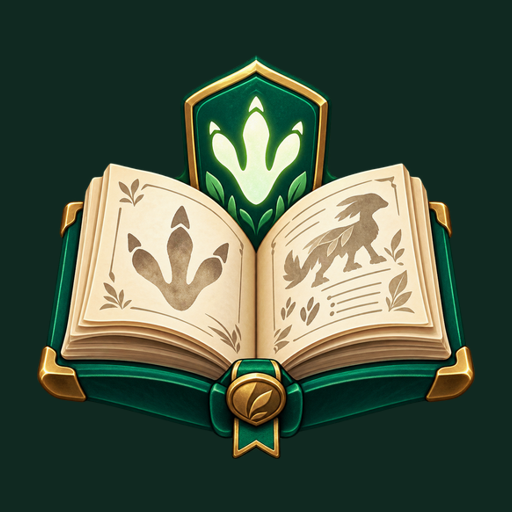
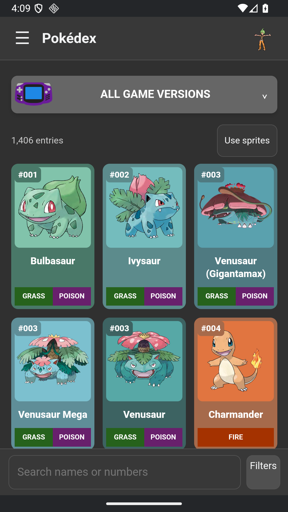
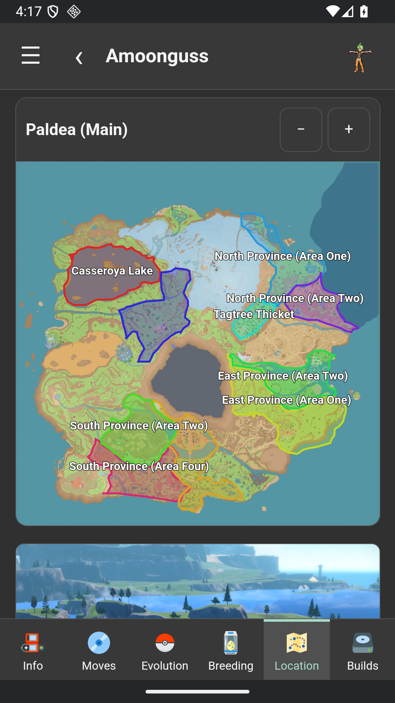

Know your next partner.
Browse Pokémon and their forms, compare stats, explore moves and abilities, and switch between artwork and sprites.

DexTrailYOUR POCKET FIELD GUIDE
From your first partner to your next shiny, keep your Pokémon journey close. Meet DexTrail, your companion for Android.
Version 1.0.2 · No online account needed · Offline reference content

FOLLOW YOUR CURIOSITY
Look up a Pokémon, find your next destination, or plan a team. The tools you need belong together.

REAL SCREENS. READY TO EXPLORE.
Take a tour of DexTrail. Choose a category to see what’s inside.
Actual DexTrail screenshots
WHAT’S NEW · VERSION 1.0.2
Champions updates now stay on the page you’re viewing. Follow each step as DexTrail checks announcements, eligible Pokémon, guide sections and artwork.
Pause and resume without losing your place. Your roster search and expanded details stay open when the guide refreshes, and interrupted checks keep your saved information safe.
Read the 1.0.2 release notesSTAY UP TO DATE
Check for PokéAPI changes and refresh the Champions guide without leaving DexTrail. The change list shows you what’s new.
These updates refresh supported reference information. DexTrail checks for new app releases when you open it and lets you choose Update now or Later.
How to get updatesREADY FOR YOUR NEXT ADVENTURE?
Download the Android app directly from our GitHub releases.
Select Download APK to get DexTrail-1.0.2.apk from GitHub.
Open the downloaded file. Android may ask you to allow installation from your browser or file manager.
Choose a nickname and avatar, set your preferences, and start exploring.
A FEW THINGS TO KNOW
Bundled reference content works offline. Refreshing information, opening source websites, and downloading additional online content require an internet connection.
No. Your nickname and avatar create a local profile on your device. Your teams, collections, and preferences stay in the app’s private storage.
Get new APK versions from the same GitHub release page. Install them over your existing DexTrail installation rather than uninstalling first. Export a backup before updating to keep an extra copy of your saved records.
No. DexTrail is an independent fan project and is not affiliated with or endorsed by Nintendo, The Pokémon Company, or Game Freak. Pokémon names and artwork belong to their respective owners. Source and artist credits are available inside the app.
Email DexTrail.Feedback@proton.me with the app version, what happened, and the steps that led to it. Please leave personal information out of screenshots.